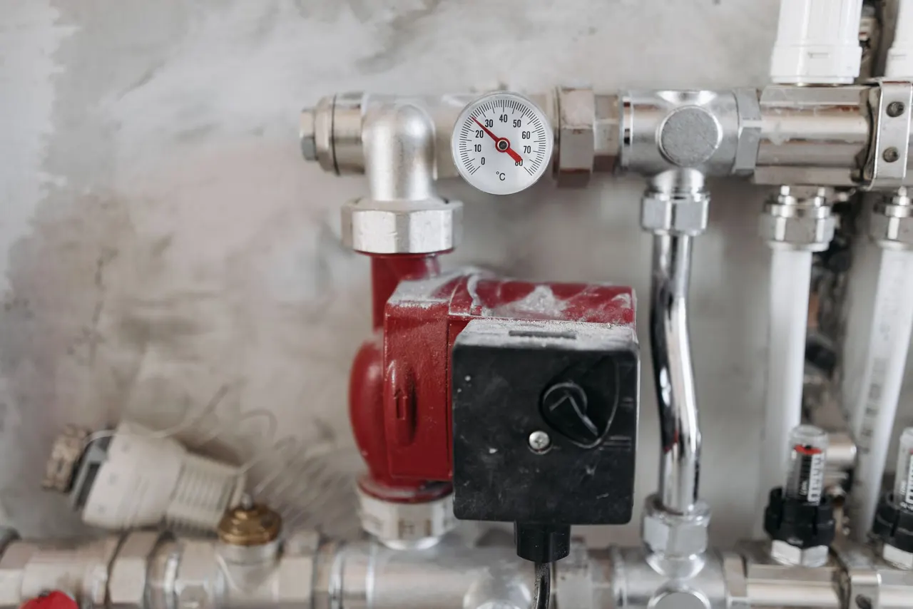

For Homes
We keep home sump pits dry through spring thaw and summer storms. You get a tested pump and a clear picture of what to watch next season.
- Pump runs constantly
- Water on basement floor
- Backup battery needed
Sump Pump Services Arlington Heights IL keeps your basement dry through spring thaws and summer storms. We repair, replace and install primary and backup pumps for homeowners in 60005 and 60004. Whether your pump quit at 2 a.m. or you want a battery backup before the next downpour, we diagnose the problem, quote the fix upfront and get it done the same day.
 Test float travelCheck valve operationMeasure amp draw
Test float travelCheck valve operationMeasure amp drawEvery sump pump services Arlington Heights IL visit starts with a full inspection and ends with a tested system. Here is what is covered in a standard call, and what we quote separately if your setup needs it.

We pull the pit lid, check float travel, test the check valve, inspect the intake screen and measure motor amp draw with a multimeter. You get a clear answer on whether the pump is healthy, weak or dead.
A stuck or waterlogged float is the most common reason a pump stops. We replace the switch, adjust the travel and run a full cycle to confirm the pump kicks on and off at the right water levels.
When the motor is done, we swap in a Zoeller or Rheem pump sized to your pit depth and discharge height. We cut the old unit free, set the new one on a solid base and reconnect the PVC discharge with primer and cement.
We clear or replace clogged, frozen or improperly sloped discharge lines. The line is routed to an approved point, fitted with freeze protection on exterior runs and tested to confirm water leaves the pit fully.
A battery backup sump pump Arlington Heights IL install includes the secondary pump, battery, charger and a check valve tied into the primary discharge. We test it under load so it works when the power is out.
We remove silt, gravel and debris from the pit, check the liner for cracks and fill the pit with a hose to watch three full pump cycles. You see the test results before we pack up.
The approach is the same for a home and a business. What changes is the access, the schedule and who needs the paperwork.
We keep home sump pits dry through spring thaw and summer storms. You get a tested pump and a clear picture of what to watch next season.
We protect commercial basements and stockrooms from groundwater damage. You get scheduled service that avoids disrupting business hours.
A plain-language look at what Sump Pump Services involves and when it is needed.
See how it worksSump Pump Services Arlington Heights IL covers everything that keeps groundwater out of your basement: inspecting the pit, testing the float and check valve, clearing the discharge line, and repairing or replacing the pump itself. A Zoeller or Rheem unit that runs every few minutes is working too hard; one that sits silent during a storm is already dead. We test both conditions and tell you which one you have.
Arlington Heights sits on clay-heavy soil that sheds water slowly, so a failed pump shows up fast. If your sump pump is not working in 60005, you may find two inches of water before you find the breaker. We handle sump pump repair near me Arlington Heights IL calls daily, plus scheduled sump pump maintenance Arlington Heights visits that catch worn floats and clogged intakes before the wet season.
A sump pump is only as good as its float, valve and discharge line.

Five steps, from the first phone call to a tested pump and a dry pit. Here is exactly what happens when you book us.
You call (224) 643-9856 or book online and describe what you are seeing: water on the floor, a pump that hums but will not move water, or a pit that stays dry when it should not. We ask about your pit depth and pump brand, then set a same-day or next-morning window.

We pull the lid, check the float travel, test the check valve and inspect the intake screen for grit. A pressure gauge and multimeter confirm whether the motor is drawing properly or the switch has failed. This takes about 20 minutes and tells us repair versus replace.

We show you what failed and give you the price for each option: repair the existing pump, replace it with a comparable Zoeller or Rheem unit, or upgrade to a primary-plus-backup setup. You decide before any work starts.

For a repair, we swap the float switch, check valve or discharge fitting. For a replacement, we cut the old pump free with a pipe cutter, set the new unit on a solid base, and reconnect the PVC discharge with primer and cement. Most swaps take two to three hours.

We fill the pit with a hose and watch the pump cycle three times, checking that the float resets cleanly and the discharge line carries water away from the foundation. Then we show you the test results and tell you what to watch for next season.

Move across a circle, or focus it and press Enter, for an illustrative thermal view of the photograph.

Primary and backup pumps we stock on the truck, sized to your pit depth and discharge height so the replacement matches your system.

Multimeters and clamp meters used to measure motor amp draw and confirm whether a pump is drawing properly or failing.

Used to cut the old discharge line cleanly and reconnect the new pump with primer, cement and code-correct fittings.

Clears clogged discharge lines and floor drains so the pump moves water away from the foundation instead of recirculating it.

Confirms discharge pressure and finds hidden leaks near the pit that keep the pump running constantly.
Thermal views are illustrative, generated from the photographs.
Inspects discharge lines and floor drains for cracks, roots and blockages that affect sump pump performance.
Replacement parts carried on every truck to fix the most common causes of pump failure in one visit.
Every pump install and discharge routing follows current Illinois Plumbing Code, including proper air gap, slope and freeze protection on exterior runs. We confirm the discharge point meets Arlington Heights and Cook County requirements before we leave.
After any repair or replacement, we fill the pit with a hose and watch the pump cycle three times. This confirms the float resets cleanly, the check valve holds and the discharge line carries water fully away from the foundation.
We measure motor amp draw with a clamp meter and compare it to the pump's rating. High amps point to a failing motor or a clogged impeller, while low amps often mean a bad switch or a pump that is not getting power.

A homeowner in Scarsdale hears the pump running every few minutes and worries it will fail during the next storm.
We inspect the check valve, float and intake screen, then test the motor amp draw. If the pump is short-cycling because of a stuck valve, we replace the valve and clean the pit. If the motor is weak, we quote a replacement.
Outcome: The pump cycles normally again, usually within one visit, and the homeowner knows exactly how much life is left in the unit.

A family near Lake Arlington loses power during a summer storm and the primary pump stops with water rising in the pit.
We install a battery backup sump pump Arlington Heights IL system, size the battery to the pit, tie the backup discharge into the primary line with a check valve and test the switch under load.
Outcome: The next outage triggers the backup automatically, and the basement stays dry without anyone home to intervene.

A property manager in the Arlington Heights Business District needs a commercial sump pump replaced before spring thaw.
We schedule the replacement after business hours, cut the old pump free, set a new Zoeller unit on a solid base and reconnect the PVC discharge. We test three full cycles and document the results.
Outcome: The building has a working pump before the thaw, with no disruption to tenants during business hours.

A homeowner in Old Arlington Heights finds water on the floor and a sump pump that hums but does not move water.
We diagnose a failed impeller and a clogged discharge line. We replace the pump, clear the line with a drain snake and confirm the discharge point is code-correct.
Outcome: The pit empties fully on each cycle, and the homeowner avoids a repeat flood during the next heavy rain.

A condo owner near Arlington Market wants annual sump pump maintenance before the wet season.
We test the float, clean the intake screen, check the check valve, inspect the discharge line and run a full cycle. We note the pump age and flag anything nearing the end of its service life.
Outcome: The pump is verified ready for spring, and the owner has a written record of the system condition.

Arlington Heights sits on clay-heavy soil that drains slowly, so groundwater reaches your sump pit fast after a heavy rain or spring thaw. Homes in older neighborhoods like Scarsdale and Old Arlington Heights often have shallow pits and original discharge lines that freeze or clog, while newer builds near Lake Arlington tend to have deeper basins and dual-pump setups.
We size every replacement pump to the actual pit depth and discharge height we measure on site, not a generic spec sheet. If you need same-day sump pump replacement Arlington Heights IL service, we stock Zoeller and Rheem units on the truck and can usually finish the swap in two to three hours.
We also follow Cook County and Arlington Heights rules on where discharge lines can empty, and we add freeze protection on exterior runs so winter does not trap water in the pit.

Before: A homeowner in Scarsdale heard the pump run every few minutes and found water seeping toward stored boxes. The check valve was stuck open, so water drained right back into the pit and the pump never rested.
After: We replaced the check valve, cleaned the intake screen and ran three full cycles. The pump now runs about once every 90 seconds during heavy rain instead of constantly, and the pit empties fully each time.
Check the check valve and float annually, and keep the intake screen clear of grit. A spring maintenance visit catches a stuck valve before it burns out the motor.
Before: A family near Lake Arlington lost power during a summer storm. The primary pump stopped, water rose two inches in the pit and was within an inch of the finished floor before the power returned.
After: We installed a battery backup sump pump Arlington Heights IL system with a battery sized to the pit, tied the backup discharge into the primary line and tested the switch under load. The next outage triggered the backup automatically.
Test the backup battery every six months and replace it every three to five years. We include a backup test in our annual maintenance visit.
Before: A homeowner in Old Arlington Heights found a humming pump that would not move water and a clogged discharge line. The impeller was jammed with grit and the exterior line was partially blocked.
After: We replaced the pump with a Zoeller unit, cleared the discharge line with a drain snake and confirmed the discharge point met code. The pit now empties fully on each cycle, even during heavy rain.
Flush the pit annually to remove grit, and have the discharge line inspected for blockages. A yearly cycle test confirms the pump is still moving water at full rate.
Most sump pump failures start small and announce themselves late. Here are the problems we see most often in Arlington Heights basements and how we solve them.
A tested pump and a dry basement floor.
Most sump pump repair Arlington Heights calls are finished in one visit. We carry Zoeller and Rheem pumps, check valves and float switches on the truck, so a failed unit is usually swapped and tested within two to four hours of arrival.
A backup sump pump Arlington Heights IL setup keeps you covered when the power drops mid-storm. We size the battery to your pit depth, wire it to the primary discharge line and run a full test cycle before we leave so you know it kicks on.
Cook County and Arlington Heights rules govern where your discharge line can empty. We route PVC pipe to an approved point, add freeze protection on exterior runs and confirm the slope drains fully, which prevents the recirculation that burns out pumps early.
You get the price before we start. A straightforward pump swap runs less than a full pit rebuild, and we explain which one your situation needs. No surprise line items after the work is done.
Clear records you can keep and share.
Record of three-cycle pump test
Images of pit and discharge line
Model and install notes
Date and work performed
Most Arlington Heights homes have one primary pump. A backup adds a second layer for power outages and heavy storms.
Runs on household power
Runs on a charged battery
Two pumps alternating
A list like this tells people straight away whether you cover their street. Not listed? Call and ask: it only takes a minute.
Based in Arlington Heights and covering the places around it. Pick one for local details.
A straight swap of an existing pump sits at the low end. A new pit, new PVC discharge line and battery backup push toward the top. We quote the exact price after inspecting your pit.
Once a year, ideally in early spring before the thaw. A sump pump maintenance Arlington Heights visit includes testing the float, cleaning the intake screen, checking the check valve and running a full cycle. Pumps in older Scarsdale homes with gritty pits may need a second check in fall. Annual service is the cheapest way to avoid a mid-storm failure.
The three most common causes are a stuck float switch, a tripped GFCI outlet and a clogged intake screen. If your sump pump is not working in 60005, check the outlet first, then look at the float. If the motor hums but no water moves, the impeller or check valve is the problem. We diagnose all three in one visit.
Yes, if your basement is finished or holds anything you care about. Storms that knock out power are the same storms that fill your pit. A backup sump pump Arlington Heights IL setup runs on a battery and takes over the moment the primary loses power. We size the battery to your pit and test the full cycle before we leave.
Other services from the same team.
Water in the pit right now? Call (224) 643-9856 and we will get a technician to your door with the parts to fix or replace your pump the same day. Upfront pricing, code-correct work, and a tested pump before we leave.
Call (224) 643-9856 or email us and we will get back to you fast. Tell us what is going on and we will tell you what it takes to fix it.